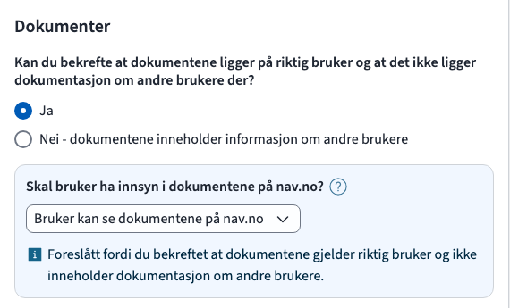
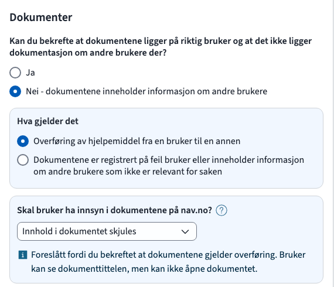

For saksbehandlere
Journalføring i Hotsak
Når du journalfører, registrerer du dokumentene på riktig person og sak. Kontroller opplysningene og dokumenttitlene før du fullfører.
Oppgavene finnes også i Gosys
Alle oppgaver lagres i Gosys. Oppgaver som skal behandles i Hotsak, er synlige i både Gosys og Hotsak. I Gosys får du beskjed om at disse oppgavene skal behandles i et annet system.
Vil du bare se oppgaver som skal behandles i Gosys? Åpne filteret System i oppgavelista. La Gosys være valgt, og fjern avhukingen for Annet system. Da skjules Hotsak-oppgavene fra oppgavelista i Gosys.
Disse dokumentene kommer til Hotsak nå
Foreløpig tar Hotsak imot et begrenset utvalg skjemaer:
- NAV 10-07.01: Søknad om generelt vedtak på hjelpemidler
- NAV 10-07.03: Søknad om hjelpemidler
- NAV 10-07.04: Fullmakt i forbindelse med søknad om tekniske hjelpemidler
- NAV 10-07.23: Behov for hjelpemidler knyttet til individuell plan
- NAV 10-07.86: Søknad om hjelpemiddel til kognisjon, kommunikasjon og lese- og skrivevansker
- NAV 10-07.87: Søknad om synshjelpemidler
Ettersendelser til disse skjemaene kommer også til Hotsak.
Slik kan du journalføre
Velg hvor dokumentene hører hjemme. I Hotsak kan du se dokumentene ved siden av opplysningene du skal kontrollere.
Journalfør og opprett sak
Velg Opprett ny sak når dokumentene skal starte en ny Hotsak-sak. Kontroller hva saken gjelder, datoer og prioritet. Velg hvem oppgaven skal til, og trykk Journalfør og opprett sak. Hotsak oppretter en sak og en oppgave for videre behandling.
Journalfør og koble til eksisterende Hotsak-sak
Velg Koble til sak når det allerede finnes en Hotsak-sak. Finn riktig sak i lista, og se etter Hotsak under «Fagsystem». Trykk Journalfør og koble til sak. Dokumentene knyttes til saken, slik at du kan fortsette behandlingen i Hotsak.
Journalfør og koble til eksisterende fagsak
Velg Koble til sak hvis dokumentene hører til en sak i et annet fagsystem, vanligvis Infotrygd. Finn riktig fagsak i lista, og trykk Journalfør og koble til sak. Dokumentene knyttes til fagsaken. Videre behandling skjer i Gosys og det aktuelle fagsystemet, ikke i Hotsak.
Når det ikke finnes en sak ennå
Kommer dokumentene før saken er opprettet, kan du velge Koble til sak og deretter Generell sak. Det kan for eksempel være en ettersendelse som kommer før selve søknaden. Dokumentene journalføres uten å knyttes til en bestemt sak. Trykk Journalfør og koble til sak for å fullføre.
Synlighet av dokumenter for bruker på nav.no
Når du journalfører, bestemmer du om bruker kan se dokumentene på nav.no. Som hovedregel har bruker rett til innsyn i dokumentene i sin egen sak. Dokumenttitlene blir alltid synlige for bruker, så skriv dem slik at bruker forstår dem.
Du gjør valgene under Dokumenter i journalføringsbildet. Du må svare før du kan journalføre.
1. Bekreft at dokumentene gjelder riktig bruker
Hotsak spør: «Kan du bekrefte at dokumentene ligger på riktig bruker og at det ikke ligger dokumentasjon om andre brukere der?»
- Ja: Dokumentene gjelder bare denne brukeren. Hotsak foreslår at bruker kan se dokumentene på nav.no.
- Nei - dokumentene inneholder informasjon om andre brukere: Du må svare på hva det gjelder, se neste steg.
2. Hvis du svarer nei: Hva gjelder det?
- Overføring av hjelpemiddel fra en bruker til en annen: Dokumentene nevner den forrige brukeren av hjelpemiddelet. Du kan journalføre, men innholdet må skjules for bruker.
- Dokumentene er registrert på feil bruker eller inneholder informasjon om andre brukere som ikke er relevant for saken: Du kan ikke journalføre i Hotsak. Overfør oppgaven til Gosys, og følg rutinen for håndtering av avvik.
3. Velg om bruker skal ha innsyn på nav.no
Hotsak foreslår et valg ut fra svarene dine. Du kan endre det hvis du har grunn til det.
- Bruker kan se dokumentene på nav.no
- Bruker kan se og åpne dokumentene. Hotsak foreslår dette når du har svart Ja.
- Skjules etter brukers ønske
- Velg dette når bruker selv har bedt om at dokumentene ikke skal vises på nav.no.
- Innhold i dokumentet skjules
- Bruker ser dokumenttittelen, men kan ikke åpne dokumentet. Valget finnes bare ved overføring av hjelpemiddel, og Hotsak foreslår det da. Ved overføring kan du ikke velge at bruker skal se dokumentene, fordi de inneholder informasjon om en annen bruker.


Er du usikker? Les gjeldende rutine for å endre visningen av dokumenter til bruker på nav.no (åpnes i ny fane).
Når oppgaven må overføres til Gosys
Velg Overfør til Gosys hvis du ikke kan behandle oppgaven i Hotsak. Du blir bedt om å velge årsak. Årsaken blir synlig som en kommentar på oppgaven i Gosys. Etter overføringen forsvinner journalføringsoppgaven fra Hotsak, og journalføring og videre behandling må gjøres i Gosys og Infotrygd.
- Behov for å sende brev
- Velg dette når du må innhente signatur eller nytt fullmaktsskjema, be om dokumentasjon, sende varsel om svartid eller sende et annet brev som ikke kan håndteres i Hotsak ennå.
- Saken skal ikke behandles i Hotsak i dag
- Hotsak støtter ikke alle områder ennå. Velg området saken gjelder: Arbeidsliv, Utdanning, AKT26, Tilskudd eller Annet. Saken må behandles utenfor Hotsak.
- Saken skal ikke behandles av Nav hjelpemiddelsentral
- Velg dette når oppgaven hører hjemme hos en annen del av Nav. Oppgi hva saken gjelder, slik at den kan følges opp riktig.
- Saken er sendt inn på feil bruker eller inneholder dokumentasjon om flere brukere
- Da kan du ikke journalføre dokumentene på én Hotsak-sak uten å avklare hvem de gjelder. Overfør oppgaven for videre håndtering.
- Annet
- Velg dette hvis ingen av årsakene passer. Beskriv kort hvorfor oppgaven ikke kan behandles i Hotsak.